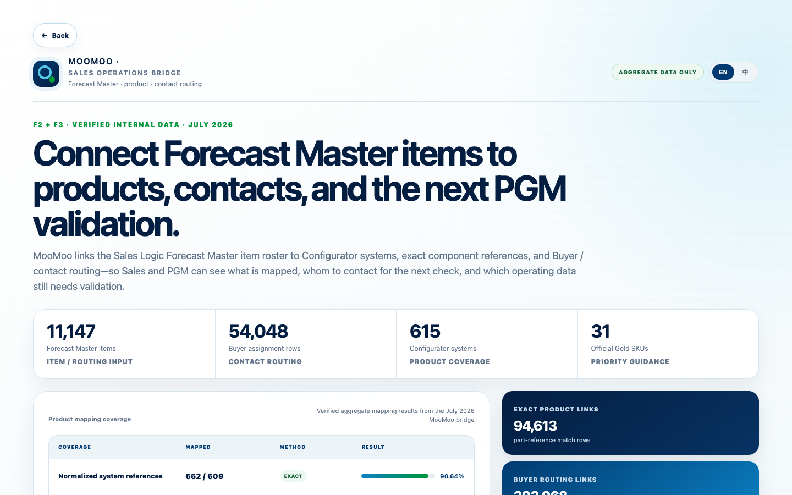
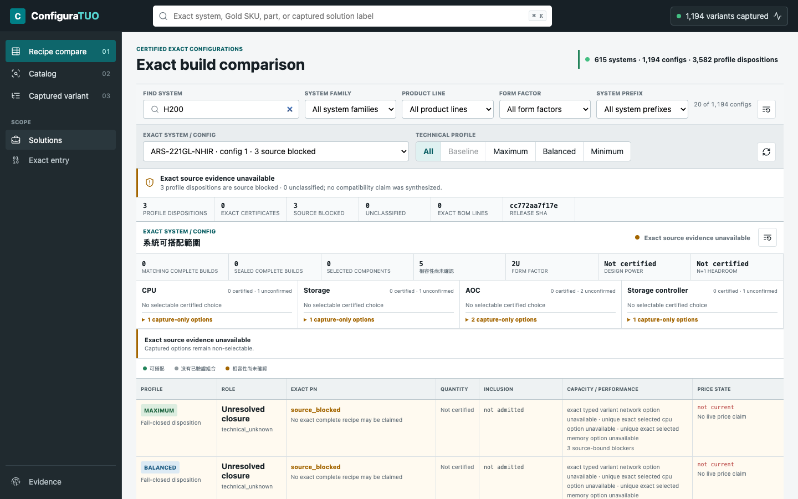
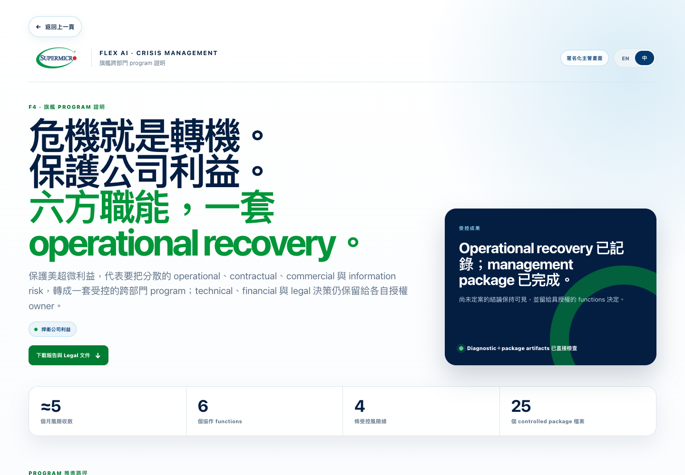
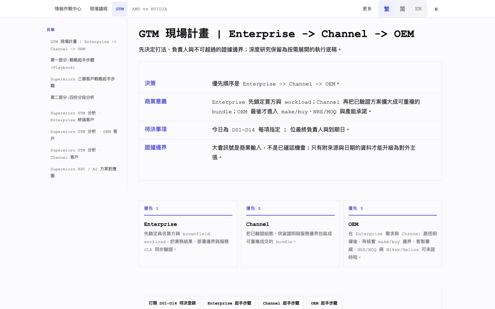
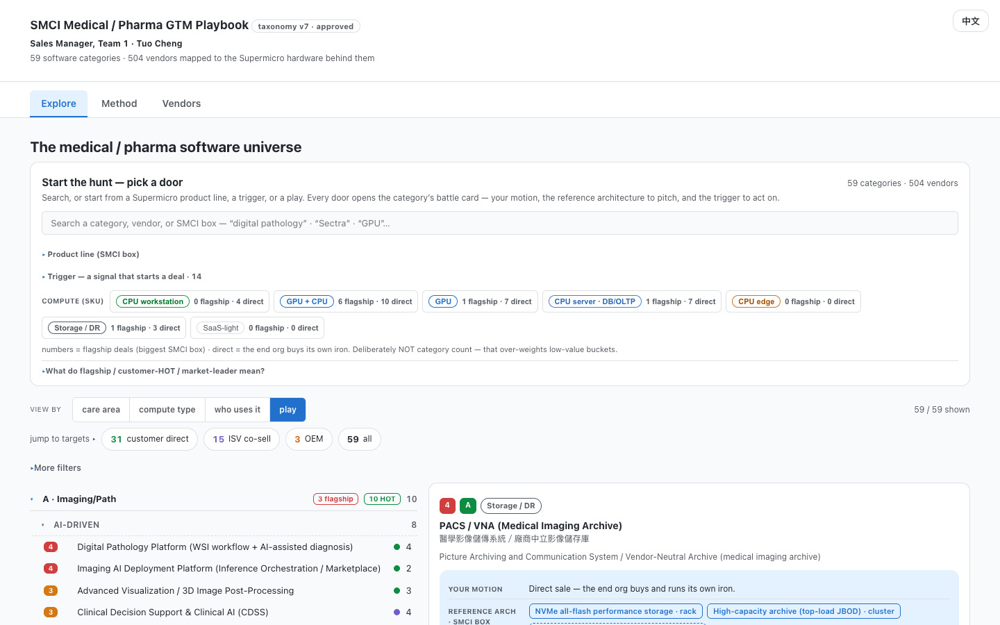
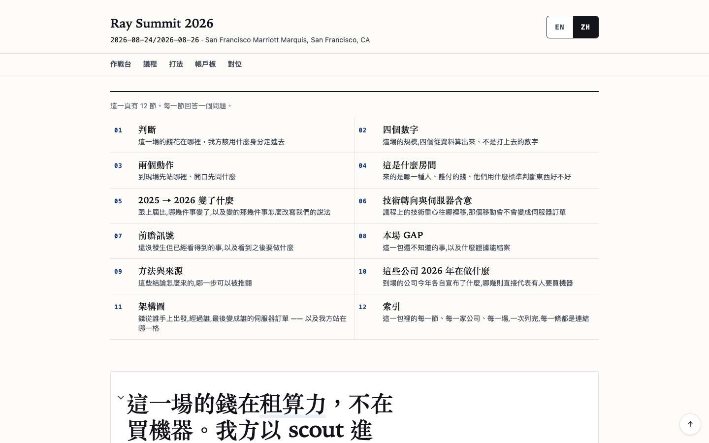

Qualify demand辨識真實需求
Translate market, product, ecosystem, and account signals into account · use case · timing · confidence.把市場、產品、生態系與 account 訊號，轉成 account · use case · timing · confidence。
Understanding the market, our products, and the Channel Partner / ISV / MSP ecosystem gives me the operating context to reassess the Sales forecast, realign the inventory forecast, and drive toward optimal operating margin.對市場、產品，以及 Channel Partner、ISV、MSP 生態系的理解，讓我能重新評估 Sales forecast、重新對齊 inventory forecast，進而推動整體營運毛利最佳化。
The difference is not more data. It is a stronger chain of judgment—from what the market may buy, to what the company should forecast, stock, build, and ship.差異不在資料更多，而在判斷鏈更完整：從市場可能買什麼，一路連到公司該預測、備貨、生產與出貨什麼。
F1–F4 belong together: qualify, calibrate, align, then close.F1–F4 必須連在一起：辨識、校正、對齊，再關閉落差。
Translate market, product, ecosystem, and account signals into account · use case · timing · confidence.把市場、產品、生態系與 account 訊號，轉成 account · use case · timing · confidence。
Challenge volume · timing · mix against booking reality; expose optimism, slippage, and unplanned demand.用 booking reality 檢查 volume · timing · mix，找出樂觀、延遲與未預期需求。
Connect configuration · material ETA · capacity · validation · pack-out · ship readiness.連接 configuration · material ETA · capacity · validation · pack-out · ship readiness。
Drive every variance to the correct owner · decision · due date—without crossing authority.把每個 variance 推到正確的 owner · decision · due date，同時不越權。
User-authorized deployed interfaces are linked directly. Local sanitized views remain optional context, not substitutes for an available live version.已獲授權的上線介面一律直接連入；local 匿名化畫面只保留作補充，不再取代已有的 live version。
Listed-company snapshots, executive records, data-center / NeoCloud dossiers, event intelligence, and vertical playbooks create a structured view of account need, readiness, timing, and confidence.上市公司快照、高管資料、data center／NeoCloud dossiers、event intelligence 與垂直市場 playbook，用來結構化 account need、readiness、timing 與 confidence。
 Sanitized from 18 Aug 2026 portal匿名化自 2026-08-18 portal
Sanitized from 18 Aug 2026 portal匿名化自 2026-08-18 portalMooMoo links the July 2026 Forecast Master item roster to Configurator systems, exact component references, and Buyer / contact routing. Sales and PGM can see what is mapped, whom to contact for the next check, and which operating data still needs validation.MooMoo 把 2026 年 7 月 Forecast Master 品項清單接到 Configurator 系統、精確零部件與 Buyer／contact routing，讓 Sales 與 PGM 看清楚哪些品項已對到產品、下一步該聯絡誰，以及哪些營運資料仍需驗證。

Verified 14 Jul 2026 mapping aggregate · no customer data已核對 2026-07-14 對應彙總 · 無客戶資料ConfiguraTUO and ArchitecTUOre use the customer’s industry and workload context to make the original Configurator flow more intelligent.ConfiguraTUO 與 ArchitecTUOre 根據客戶產業與所屬 workload，智慧化原本 Configurator 的配置流程。
ArchitecTUOre access: To protect Supermicro interests, access is limited to Supermicro employees. Sign in with your @supermicro.com email; the PIN will be sent to your inbox.ArchitecTUOre 登入：為保護 Supermicro 權益，僅限 Supermicro 員工登入。請使用 @supermicro.com 電子郵件登入；PIN 碼將寄至信箱。
ConfiguraTUO local view: GoldSKU-based update completionConfiguraTUO 本機畫面：依 GoldSKU 與更新完成度85%

Last updated · 24 Aug 2026最後更新 · 2026-08-24To protect Supermicro’s interests, I coordinated six functions around an at-risk account: within one week, advancing the RMA from opening into repair intake and active diagnostics, then routing the signed-contract, potential out-of-scope use, refund, and Legal issues to the authorized owners.為保護美超微利益，我協調六方職能處理高風險 account：一週內把 RMA 從開案推進至 repair intake 與 active diagnostics，並將已簽合約、客戶疑似超出 PoC scope、refund 與 Legal 議題交由授權 owner 處理。

Flex AI controlled package · 20 Aug 2026Flex AI controlled package · 2026-08-20All seven user-authorized routes were checked on 24 Aug 2026. ArchitecTUOre is live behind sign-in; time-sensitive snapshots remain clearly labeled.七個已授權網址均於 2026-08-24 完成連線檢查。ArchitecTUOre 已上線但需登入；具時效性的 snapshot 亦清楚標示。
To protect Supermicro interests, access is limited to Supermicro employees. Use @supermicro.com; the PIN is sent to your inbox.為保護 Supermicro 權益，僅限 Supermicro 員工使用 @supermicro.com 登入；PIN 碼將寄至信箱。
archtecttuore-smc-product.org/#home ↗ LIVE · INTERNAL USE · POINT-IN-TIMEArchitecture Brief v2 hub; re-verify status and figures before acting.Architecture Brief v2 hub；行動前需重新確認 status 與 figures。
tuosmc.github.io/dlr-supermicro-brief/Coresite/ ↗ LIVE · POINT-IN-TIMEFirst-principles account brief; evidence through Q1 FY2026.First-principles account brief；evidence 截至 Q1 FY2026。
tuosmc.github.io/dlr-supermicro-brief/dlr-brief.html ↗ LIVE · SNAPSHOT48 checked; 19 portal-open whitespace accounts at the 29 Jul snapshot. Re-check the portal before action.7 月 29 日 snapshot：48 家已檢查，19 家 portal-open whitespace accounts；行動前需重查 portal。
tuosmc.github.io/dlr-supermicro-brief/dlr-supermicro-lead-tracker.html ↗ LIVE · INTERNAL USE31-target prospect, buyer, operator, landlord, and ecosystem portal.31 個 targets 的 prospect、buyer、operator、landlord 與 ecosystem portal。
tuosmc.github.io/ai-hpc-target-dossiers/ ↗ LIVE59 categories and 504 vendors across direct, ISV, and OEM routes.59 個類別、504 家 vendors，跨 direct、ISV 與 OEM routes。
tuosmc.github.io/medpharma-gtm/ ↗ LIVE SNAPSHOT · RE-VERIFYDeployed event-intelligence snapshot; factbase is time-bounded.已部署的 event-intelligence snapshot；factbase 具有時效邊界。
tuosmc.github.io/yotta-2026/yotta-command-center.en.html ↗Flex AI is the strongest cross-functional proof. Events, vertical plays, architecture, and solution mapping show the component disciplines around it.Flex AI 是最強的跨部門證明；event、vertical play、architecture 與 solution mapping 則展示支撐它的 component disciplines。
Operational recovery · six-function coordination · signed-contract and Legal routingOperational recovery · 六方職能協作 · 已簽合約與 Legal routing

Event intelligence translated into enterprise, channel, and OEM action.把 event intelligence 轉成 enterprise、channel 與 OEM 行動。

59 categories, 504 vendors, and direct / ISV / OEM routes.59 個類別、504 家 vendors，以及 direct／ISV／OEM 路徑。

Supermicro employees only: sign in with @supermicro.com; the PIN is sent by email.僅限 Supermicro 員工：使用 @supermicro.com 登入，PIN 碼將寄至信箱。

A concise value-chain view for buyer, partner, and platform implications.把 buyer、partner 與 platform implication 壓縮成 value-chain view。
The claim is transferable operating discipline—not that every PGM system or decision right has already been owned.要證明的是可轉移的 operating discipline，而不是宣稱已經擁有所有 PGM 系統或決策權。
Public-company, event, prospect, and vertical-market intelligence上市公司、event、prospect 與 vertical-market intelligence
Make account, use case, timing, and confidence explicit before aggregation.在 aggregation 前明確 account、use case、timing 與 confidence。
Version-aware quote, order, and configuration reconciliation版本化 quote、order 與 configuration reconciliation
Separate volume, timing, and mix, then connect the actual side to the frozen forecast.拆分 volume、timing、mix，再把 actual side 接回 frozen forecast。
ConfiguraTUO, ArchitecTUOre, BTO, workload fit, and release-gate workConfiguraTUO、ArchitecTUOre、BTO、workload fit 與 release-gate 工作
Expose configuration, source, validation, material, capacity, and readiness dependencies.明確 configuration、source、validation、material、capacity 與 readiness dependency。
Flex AI: cross-functional crisis management across operational recovery, signed-contract / Legal review, refund escalation, and executive reportingFlex AI：跨部門危機管理，涵蓋 operational recovery、已簽合約／Legal 檢視、refund escalation 與 executive reporting
One factual baseline, protected decision rights, no unauthorized commitment, and every open item assigned to an owner and next decision.一套事實基準、保留決策權、不做未授權承諾，並讓每個 open item 都有 owner 與下一個 decision。
Every available, user-authorized live version is linked directly. Local appears only as a fallback or where no deployed interface exists.所有可用且已獲授權的上線版本均直接連入；Local 只作備援，或用於沒有 deployed interface 的專案。
Start narrow, learn the real cadence and decision rights, then make one repeatable control visible.先縮小範圍，學清楚實際 cadence 與 decision rights，再做出一個可重複控制。
Confirm forecast grain, lock point, system of record, owners, material and build gates, commitment authority, and review cadence.確認 forecast grain、lock point、system of record、owner、material／build gate、commitment authority 與 review cadence。
Compare frozen forecast to booking, classify volume / timing / mix, trace one constraint, and close owners and dates.把 frozen forecast 對 booking，拆 volume／timing／mix，追一個 constraint，關閉 owner 與 date。
Propose one lightweight forecast-readiness or exception-control view only after learning the local process.先學清楚 local process，再提出一個輕量的 forecast-readiness 或 exception-control view。
Connect outside-in market intelligence with internal execution: use numbers to calibrate forecast, align product configuration, Buyer and PM ownership, and close cross-functional gaps so operating decisions can be measured, optimized, and delivered.把 outside-in 市場情報與內部執行接起來：以數字校正 forecast，對齊產品配置、Buyer／PM ownership 與跨部門 closure，讓營運決策可以被衡量、優化並落地。
Back to thesis回到主張